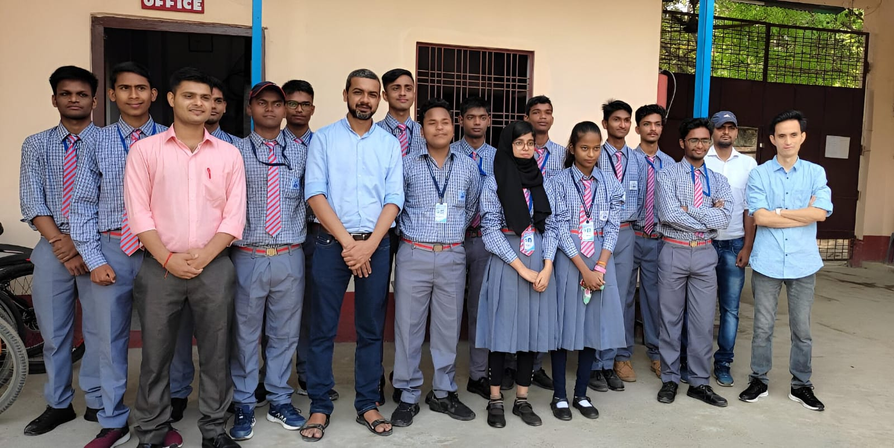
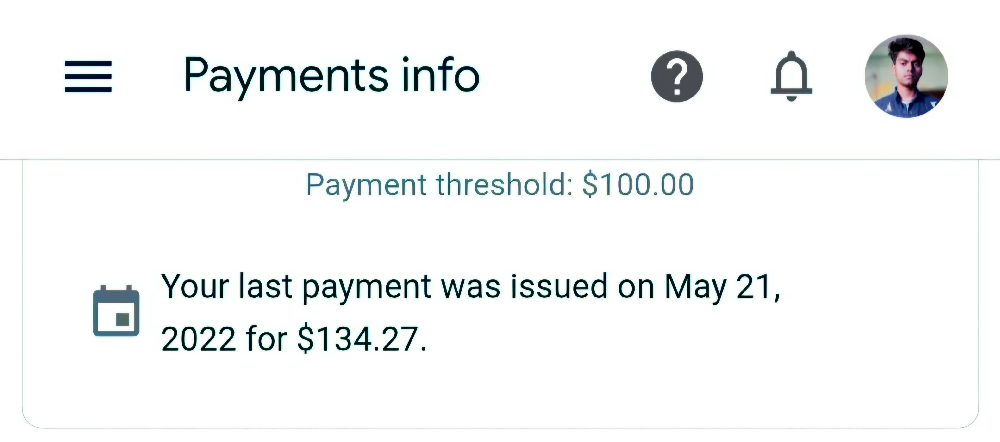
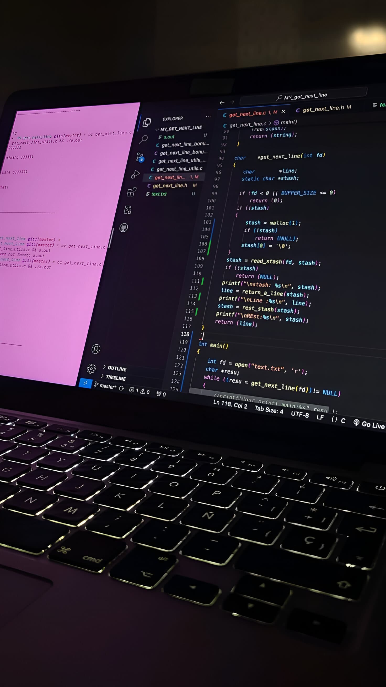
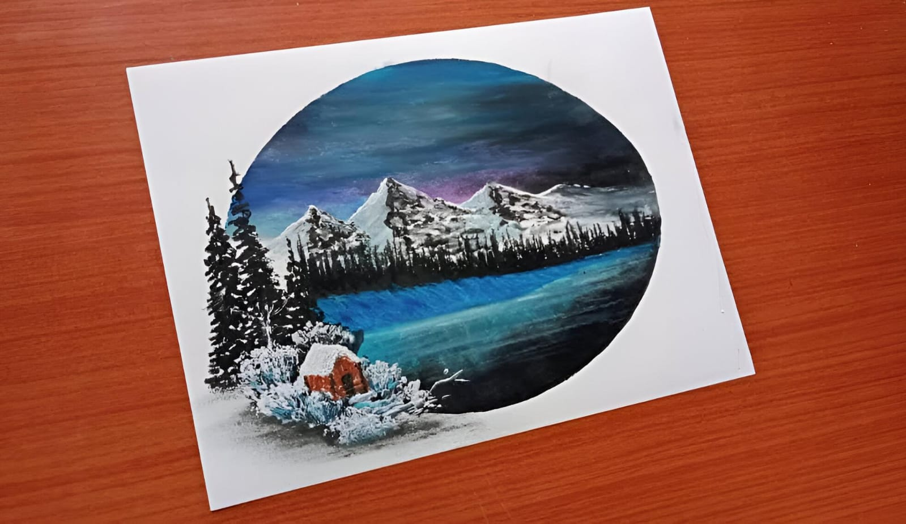
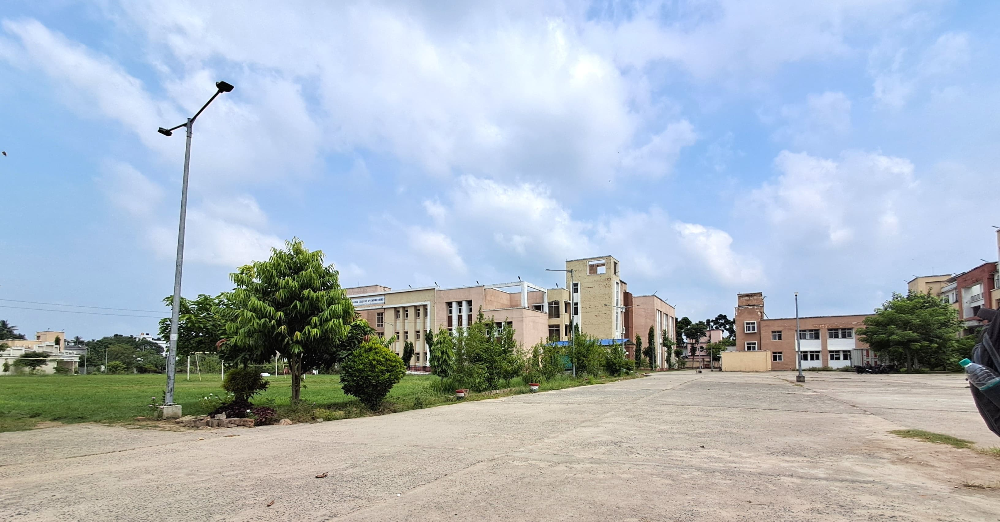
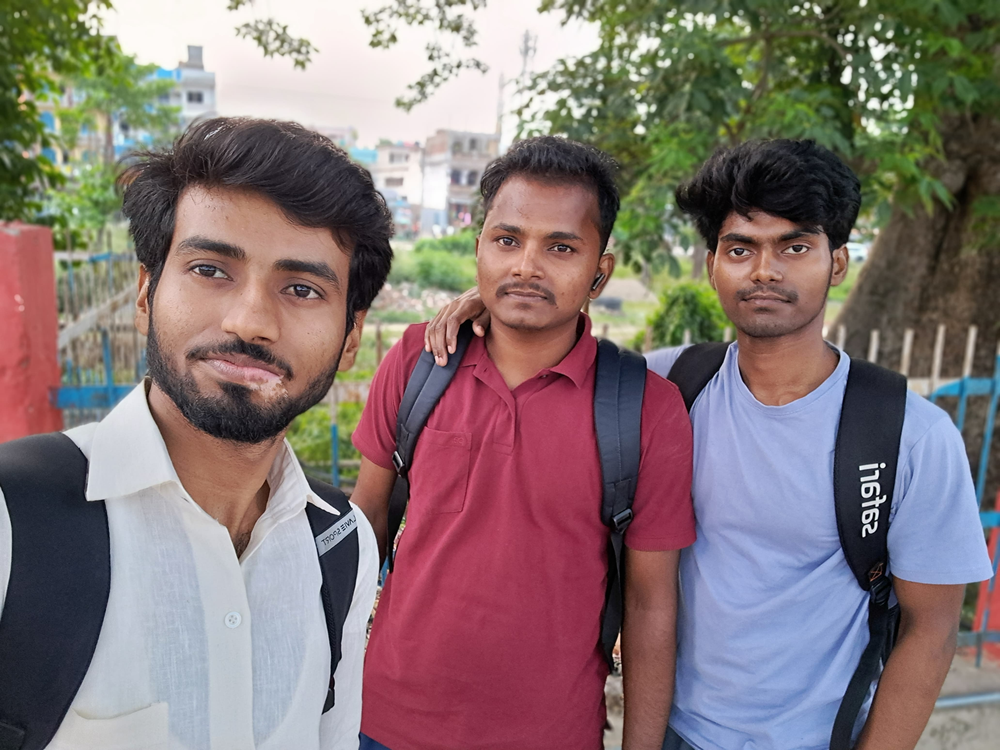

I'm deeply passionate about tech and creativity, with a love for building projects, designing clean
interfaces,
and exploring new tools. Always learning and improving — hoping to inspire others to keep growing,
creating, and
enjoying the journey in tech.
I started my academic journey with a strong curiosity to learn and a love for creating new things. From a
young age, I was always interested in how things worked—whether it was solving math problems, understanding
science, or exploring technology. This interest helped me stay focused in school, where I worked hard not
just to get good grades, but to truly understand what I was learning.
Along with my studies, I also believed in growing as a person. I took part in activities outside the
classroom, like science fairs, coding challenges, and volunteering. These experiences helped me learn
important life skills like problem-solving, time management, and teamwork. It wasn’t always easy to balance
everything, but I learned to stay organized and never give up.

Now, as a college student, I still follow the same mindset. I see education as more than just a way to earn a
degree—it’s a way to grow, think in new ways, and build a better future. I hope to keep learning, improving,
and using my knowledge to make a positive difference in the world.
YouTube Journey
During my school years, I decided to try something new and started creating content on YouTube. I worked on
my channel for about two years, and it turned out to be one of the best learning experiences I’ve ever had.
At first, I just wanted to share my thoughts and ideas, but over time, I realized how much I was learning
along the way.
I taught myself how to record and edit my art videos so people could easily follow along and learn from
them. Even though I didn’t show my face, I made sure the content was clear and interesting. Over time, I got
better at figuring out what viewers liked and how to keep them engaged. It really helped me build confidence
in sharing my art and explaining things through visuals.
Running a YouTube channel also taught me time management and consistency, since I had to plan content
while keeping up with my schoolwork. It wasn't always easy, but it was very rewarding. I loved the
creativity it allowed and the feedback I got from viewers.

Overall, content creation helped me grow in many ways and gave me real-world skills that I still use today.
It also showed me how powerful digital platforms can be for sharing ideas and connecting with others.
Hobbies & Skills
Alongside my studies, I spent time exploring different hobbies that interested me. I was always curious about
how things worked, especially in the digital world. So, I started learning graphic design, programming, and
digital marketing. At first, I just explored them out of interest, but over time, I realized how useful and
exciting these skills were.
Graphic design helped me express my creativity and taught me how to make eye-catching visuals. I enjoyed
working on logos, posters, and social media designs. Programming challenged me in a different way—it made me
think logically and solve problems step by step. I started with small projects and felt proud every time I
built something that worked. Digital marketing showed me how the online world works—how to reach people,
share ideas, and grow an audience.

These hobbies not only gave me practical skills but also helped me learn more about myself. I discovered what
I enjoyed most and where my strengths are. It also made me more confident in trying new things. Exploring
different fields gave me a broader view of the world and helped me develop a strong and diverse skill set
that I believe will help me in both my personal and professional life.

Online Business Journey
In 12th grade, I took a bold step and started my own online business. It was my first real experience in the
world of entrepreneurship, and I was both excited and nervous. I didn’t have much experience at the
beginning, but I was eager to learn and ready to work hard.
I spent time researching, planning, and setting up the business online. From creating a website to marketing
the products, I handled everything myself. It wasn’t easy—there were many challenges along the way—but I
kept learning and improving. Slowly, I started seeing some results. Getting those first few sales felt
amazing. It showed me that my efforts were working and gave me a huge boost of confidence.
Running a business taught me more than just how to sell something. I learned how to solve problems, manage
time, and think creatively. I also understood the importance of customer service and how to adapt when
things don’t go as planned. It was a valuable experience that gave me a taste of how the real world works.
Looking back, starting this business in school was one of the best decisions I made. It helped me grow as a
person and opened my eyes to new possibilities.
Pursuing B.Tech
Currently, I am pursuing my B.Tech in Engineering, and it has been a very exciting and meaningful journey so
far. I have always been passionate about technology and curious about how things work. Choosing engineering
was a natural decision for me because it combines creativity, problem-solving, and innovation—all the things
I truly enjoy.
Through my studies, I’m learning about core concepts like electronics, coding, mechanics, and design. These
subjects are helping me understand how technology shapes the world around us. I enjoy working on practical
projects, doing experiments in the lab, and using what I learn in real situations. Every new topic I study
opens up more ideas and possibilities.
Along with academic growth, this journey is also helping me improve professionally. I’m developing important
skills like teamwork, communication, and critical thinking. Group assignments and presentations have made me
more confident when working with others and sharing ideas. I’ve also started connecting with people from
different backgrounds, which gives me a broader view of the industry.


Studying engineering is not just about passing exams—it's about growing into someone who can create useful
solutions and bring positive change. I'm excited to keep learning and building my future in this field.